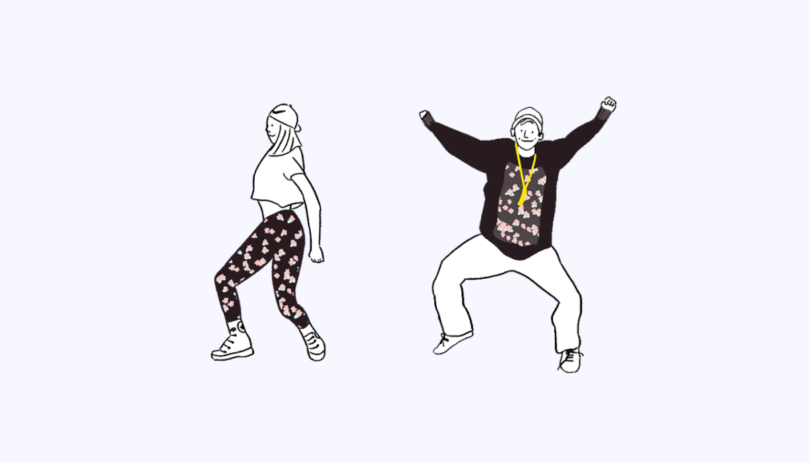
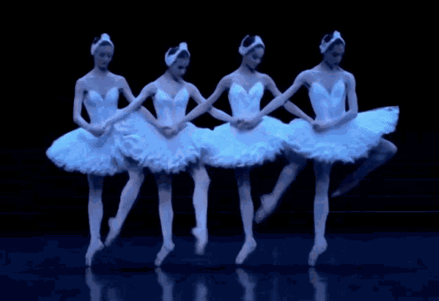
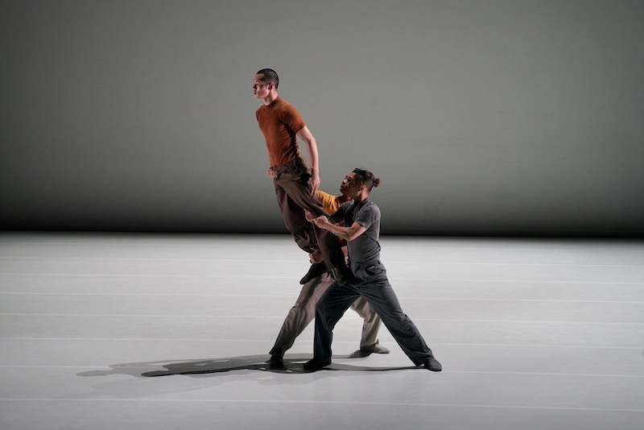

Dancers!
Let's
Dance!

Dance is an art form consisting of sequences of body movements with aesthetic and often symbolic value, either improvised or purposefully selected. Dance can be categorized and described by its choreography, by its repertoire of movements, done simultaneously with music or with instruments; or by its historical period or place of origin.
Classical Chinese Dance;
Chinese folk Dance;
Ballet;
Conemporary Dance; Street Dance;... ...
Dance in China is a highly varied art form, consisting of many modern and traditional dance genres. The dances cover a wide range, from folk dances to performances in opera and ballet, and may be used in public celebrations, rituals, and ceremonies. There are also 56 officially recognized ethnic groups in China, and each ethnic minority group in China also has its own folk dances. Outside of China, the best-known Chinese dances today are the Dragon dance and the Lion dance.

Ballet is a type of performance dance that originated during the Italian Renaissance in the fifteenth century and later developed into a concert dance form in France and Russia. It has since become a widespread and highly technical form of dance with its own vocabulary. Ballet has been influential globally and has defined the foundational techniques which are used in many other dance genres and cultures. Various schools around the world have incorporated their own cultures. As a result, ballet has evolved in distinct ways.
A ballet as a unified work comprises the choreography and music for a ballet production. Ballets are choreographed and performed by trained ballet dancers. Traditional classical ballets are usually performed with classical music accompaniment and use elaborate costumes and staging, whereas modern ballets are often performed in simple costumes and without elaborate sets or scenery.

Contemporary dance is a genre of dance performance that developed during the mid-twentieth century and has since grown to become one of the dominant genres for formally trained dancers throughout the world, with particularly strong popularity in the U.S. and Europe. Although originally informed by and borrowing from classical, modern, and jazz styles, it has come to incorporate elements from many styles of dance. Due to its technical similarities, it is often perceived to be closely related to modern dance, ballet, and other classical concert dance styles.
